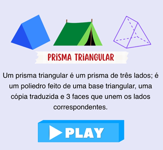
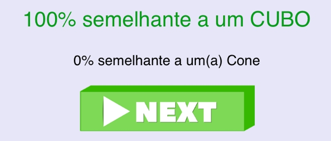

Instruções
O jogo GeometrIA é uma aplicação é experimental, portanto
pode apresentar algumas
falhas
como a classificação errada de alguns objetos ou não indentificação do objeto. Para uma
melhor
experiência siga as instruções a seguir:
1º passo: Após a contagem regressiva aguarde a permissão de acesso a camera do seu dispositivo.

2º passo: Após permitir o acesso a câmera presione o botão "Play" para encontrar um objeto semelhante ao sólido informado.

3º passo: Posicione bem a câmera para que seja possível reconhecer o objeto, caso não reconheça você pode mudar a posição do objeto. Abaixo da camera será informado o percentual de semelhança do objeto com os sólidos geométricos. Para prosseguir clique no botão "Next".
